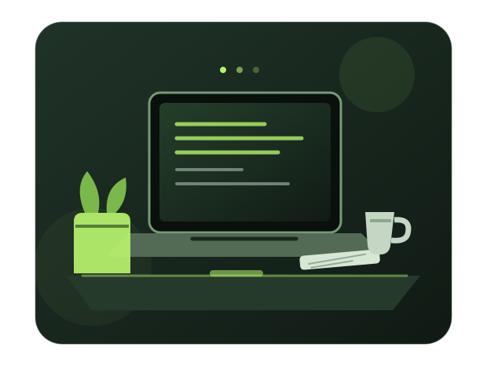

WEB DEVELOPMENT01
Why semantic HTML matters
HTML is more than a way to place text on a screen. Clear structure helps browsers, assistive technology, and future-you understand a page.
NOTES FROM THE JOURNEY
A small corner of the internet where I keep track of what I'm learning and what each new project teaches me.
OCTOBER 2026 · 4 MIN READ
It's tempting to wait until you know everything before you begin. But a simple page that works can teach you more than a perfect plan that never leaves your notebook.
Read the notes ↓THE NOTEBOOK
Short notes on the things I'm figuring out.
HTML is more than a way to place text on a screen. Clear structure helps browsers, assistive technology, and future-you understand a page.
A design should feel comfortable on a wide monitor and a small phone. Flexible grids, sensible spacing, and media queries make a difference.
Consistency is not about having a perfect day every day. It's about returning to the work and making the next attempt a little better.
KEEP EXPLORING
Want to know a little more about the person behind these notes? Head over to my about page.
Meet Saqib